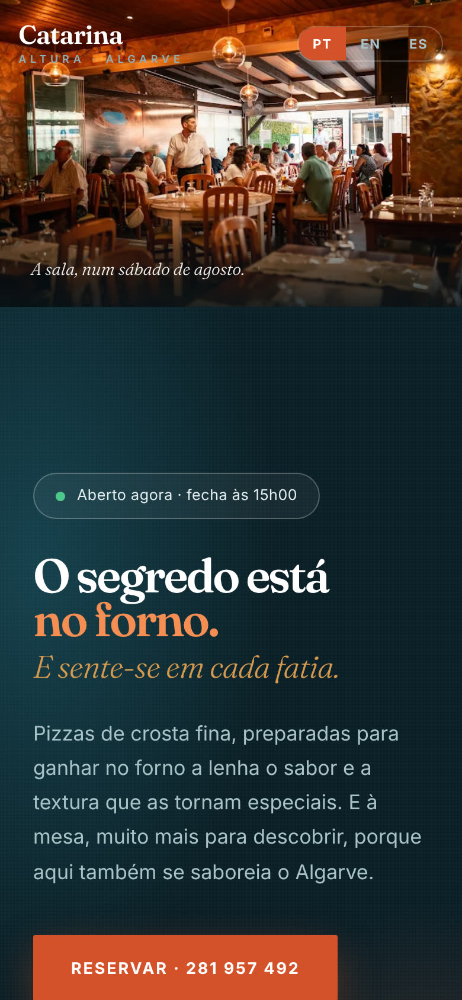
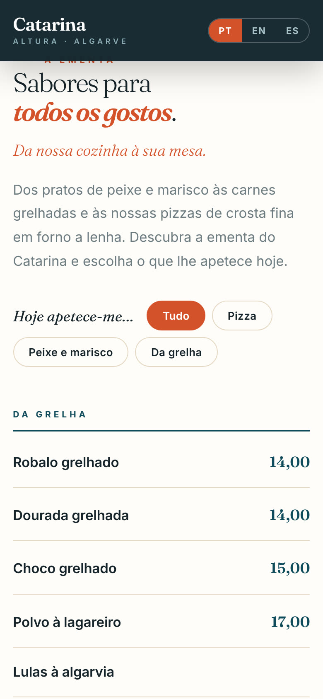
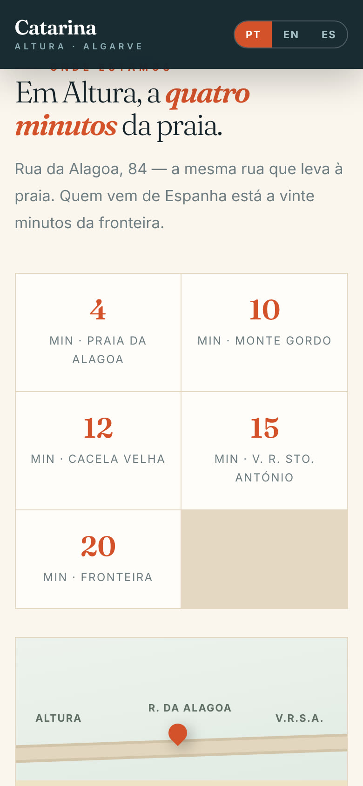

Pizza em forno a lenha e cozinha algarvia, a quatro minutos da Praia da Alagoa. Os clientes gostavam da casa, mas para a encontrar tinham de juntar o restaurante aos bocados, em sites de outros. Fizemos-lhe uma casa própria na internet, em português, inglês e espanhol.



O botão liga logo para o 281 957 492, no topo e no fim da página.
O site sabe o horário e diz se a casa está aberta naquele minuto. À quarta diz que está fechada.
Pizza, peixe e marisco ou grelha: um toque filtra a ementa, com os preços.
Um botão muda o site todo. Para o turista de agosto e para quem vem de Ayamonte.
Quatro minutos da Praia da Alagoa, dez de Monte Gordo, vinte da fronteira.
Fotografias da própria casa, não de banco de imagens.
Números dados pela própria Catarina, sem arredondar para cima.
Antes do site e agora, na mesma época do ano.
Pessoas que abriram o site, contadas pelo próprio site.
Quem disse à mesa ou ao telefone que viu o site.
Começamos por uma conversa de oito perguntas sobre o seu negócio. Sem custo e sem compromisso.
Conhece-nos →